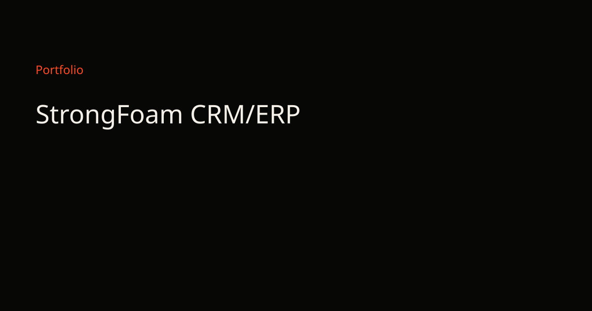

Custom software
Custom software, built for how you work.
We design, build and run AI-powered tools that fit your business, not the other way around.
Models
The models behind the work
 Workers AI
Workers AI Amazon Bedrock
Amazon Bedrock Anthropic
Anthropic Azure OpenAI
Azure OpenAI Baseten
Baseten Cartesia
Cartesia Cerebras
Cerebras Cohere
Cohere Deepgram
Deepgram DeepSeek
DeepSeek ElevenLabs
ElevenLabs Fal AI
Fal AI Google AI Studio
Google AI Studio Google Vertex AI
Google Vertex AI Groq
Groq Hugging Face
Hugging Face Ideogram
Ideogram Mistral AI
Mistral AI OpenAI
OpenAI OpenRouter
OpenRouter Parallel
Parallel Perplexity
Perplexity Replicate
Replicate xAI
xAI
 Meta Llama
Meta Llama Google Gemma
Google Gemma- Mistral
 Qwen
Qwen- DeepSeek
 gpt-oss
gpt-oss NVIDIA Nemotron
NVIDIA Nemotron Moonshot Kimi
Moonshot Kimi Zhipu GLM
Zhipu GLM IBM Granite
IBM Granite Black Forest Labs FLUX
Black Forest Labs FLUX Stability
Stability Leonardo
Leonardo Whisper
Whisper BAAI
BAAI
Custom software
Everything you need to put AI to work in your business.

Search & AI visibility
Show up when someone asks a search engine or an AI assistant for what you do.
PiRX went from near-zero to 375K search impressions and 43.5K AI-feature impressions in 90 days.

Marketing
Ship on-brand images, video, and voice, and research you can open and check.

Sales
An assistant that keeps the conversation and finishes the request in the tools you already use.

Customer service
Callers get an answer from your records, and a person when the call needs one.

Operations
Turn the way you already work into software, answers from your files, and web jobs that run themselves.

Design
Sites and product pages shaped around the work, already live for StrongFoam, Milrcorr, and pirx.ca.

Platform
Use the best model for every job, on one bill, and let code run only inside the limits you set.
Work
Work that's already running.
Operate
StrongFoam

Recording coming
Build
Milrcorr
Recording coming
Find
pirx.ca


Models
Every AI model. One bill.
Use the model that fits the job. The invoice stays one.
Search & AI visibility
Get found in AI search.
PiRX went from near-zero to 375K search impressions and 43.5K AI-feature impressions in 90 days.
Google Search Console, Jul 14 to Oct 13, 2026. The AI-feature count is separate and is not added to the search total.
Search engines, answer engines, and generative engines are three ways someone looks you up. The work is the same: the page that should answer is the one they can read.

Apps that scale, proudly built with Cloudflare.
They grow with your business, from the first user to millions, without a rebuild, and stay fast, secure, and available wherever your customers are.
Questions
What does Abracadabra AI build?
We design, build and run AI-powered tools that fit your business. AI takes a task. You keep the relationship. You leave with the live system, a film of the screens, and the words you use to show it. Shipped examples include Milrcorr, the StrongFoam website, Schema, LLM Leverage, and an associate app shown here as the Getting started film (Super Funnel).
Do you only build software?
No. Marketing, the application, the model, the customer record, and the work that gets you found ship with the product, fitted to how you already work. Public examples on this page include Milrcorr, StrongFoam, Schema, LLM Leverage, Super Funnel, and PIRX. Other work is named when you allow it.
What does the name Abracadabra mean?
Traced back far enough, Abracadabra is Aramaic, roughly avra kadavra: I will create as I speak. The steps, the exceptions, and the words you already use become a running system. The creation is production software, not a mockup.
What is the proof behind from zero to scale?
From near-zero to 375K search impressions and 43.5K AI-feature impressions in 90 days. Google Search Console, Jul 14 to Oct 13, 2026, recorded 375K search impressions, 1.85K clicks, and an average position of 7.6 for pirx.ca. The Generative AI features report is a separate count of 43.5K impressions and is not added to the search total. Both curves start near zero in mid-July.
How does a project work?
You tell us the steps, the exceptions, and the sentence a good rep already says. We build the software around those steps, with AI where it removes a task and a person where the relationship matters. You leave with the live system, the film, and the script, and you can demo it without us in the room.
Who is Abracadabra AI for?
Your business, when the way you work does not fit a product you can buy. You already have customers and a way of working no off-the-shelf product was drawn for. Or you are replacing a pile of tools that each hold a piece of the customer. Or you need the product and the way you sell, in the same delivery. Or the job is too specific for a catalog, and we take it.
What if a product I can buy already does the job?
Buy it. When it does not fit, we build the one that does.
Are the wellness assessments you build diagnostic?
No. The clinical-style assessments we have shipped are non-diagnostic. They educate and route a person to a next step. They do not diagnose.
How do I know if my business is ready to put AI to work?
Take the Readiness Check at https://check.abra-ca-dabra.app/check. It shows where the work slows down: whether the data, the workflow, the owner, and the decision can support real work, and how visible the public site is to answer engines. Five to seven minutes, then a thirty-minute working session if you want one.
Start
Start a project
Tell us the steps, the exceptions, and the sentence a good rep already says. We build the software around that.